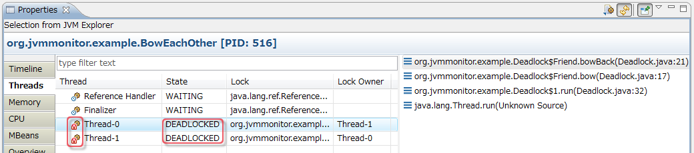

Identifying the code causing deadlock
When monitoring a JVM, deadlock is automatically detected and you can find out which threads are involved in deadlock.
To identify the code causing deadlock:
-
Search the threads that has the state DEADLOCKED at State column.
If there are many threads, you may click the header of State column to sort threads,
or type the filter text "DEADLOCKED" at filter.
-
Look at Lock column and Lock Owner column to find out the lock object
and its owner thread for each locked thread.
-
Select the deadlocked thread so that its stack traces are shown on right hand side,
and find out which methods are being invoked.
-
Double-click the method in stack traces to check the code on Java editor.
